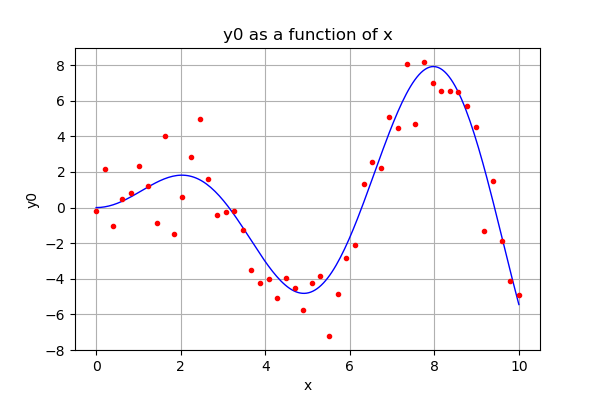
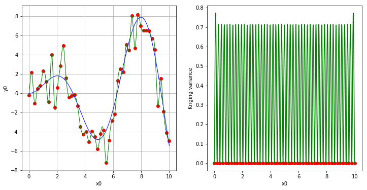
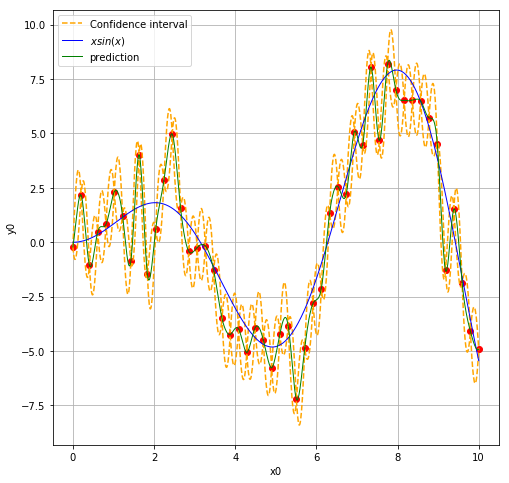
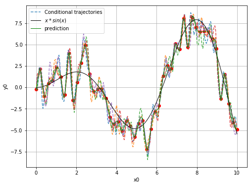
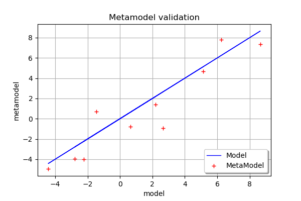
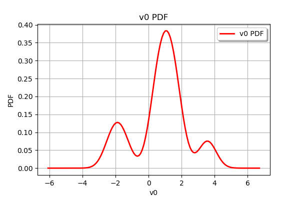

Advanced kriging¶
In this example we will build a metamodel using gaussian process regression of the function.
We will choose the number of learning points, the basis and the covariance model.
In [1]:
import openturns as ot
try:
get_ipython()
except NameError:
import matplotlib
matplotlib.use('Agg')
from openturns.viewer import View
import numpy as np
import matplotlib.pyplot as plt
Generate design of experiment
We create training samples from the function . We can change their number and distribution in the range.
In [2]:
dim = 1
xmin = 0
xmax = 10
n_pt = 50 # number of initial points
with_error = True # whether to use generation with error
ref_func_with_error = ot.SymbolicFunction(['x', 'eps'], ['x * sin(x) + eps'])
ref_func = ot.ParametricFunction(ref_func_with_error, [1], [0.0])
x = np.vstack(np.linspace(xmin, xmax, n_pt))
#x = np.vstack([0, 1, 2, 4, 5, 6, 8, 9, 10])
ot.RandomGenerator.SetSeed(1235)
eps = ot.Normal(0, 1.5).getSample(n_pt)
X = ot.Sample(n_pt, 2)
X[:, 0] = x
X[:, 1] = eps
if with_error:
y = np.array(ref_func_with_error(X))
else:
y = np.array(ref_func(x))
graph = ref_func.draw(xmin, xmax, 200)
cloud = ot.Cloud(x, y)
cloud.setColor('red')
cloud.setPointStyle('bullet')
graph.add(cloud)
graph
Out[2]:

Create the kriging algorithm
In [3]:
# 1. basis
ot.ResourceMap.SetAsBool('GeneralLinearModelAlgorithm-UseAnalyticalAmplitudeEstimate', True)
basis = ot.ConstantBasisFactory(dim).build()
print(basis)
# 2. covariance model
cov = ot.MaternModel([1.], [2.5], 1.5)
print(cov)
# 3. kriging algorithm
algokriging = ot.KrigingAlgorithm(x, y, cov, basis, True)
## error measure
#algokriging.setNoise([5*1e-1]*n_pt)
# 4. Optimization
# algokriging.setOptimizationAlgorithm(ot.NLopt('GN_DIRECT'))
startingPoint = ot.LHSExperiment(ot.Uniform(1e-1, 1e2), 50).generate()
algokriging.setOptimizationAlgorithm(ot.MultiStart(ot.TNC(), startingPoint))
algokriging.setOptimizationBounds(ot.Interval([0.1], [1e2]))
# if we chose not to optimize parameters
#algokriging.setOptimizeParameters(False)
# 5. run the algorithm
algokriging.run()
Basis( [class=LinearEvaluation name=Unnamed center=[0] constant=[1] linear=[[ 0 ]]] )
MaternModel(scale=[1], amplitude=[2.5], nu=1.5)
Results exploitation
In [4]:
# get some results
krigingResult = algokriging.getResult()
print('residual = ', krigingResult.getResiduals())
print('R2 = ', krigingResult.getRelativeErrors())
print('Optimal scale= {}'.format(krigingResult.getCovarianceModel().getScale()))
print('Optimal amplitude = {}'.format(krigingResult.getCovarianceModel().getAmplitude()))
print('Optimal trend coefficients = {}'.format(krigingResult.getTrendCoefficients()))
residual = [4.10075e-16]
R2 = [5.06351e-31]
Optimal scale= [0.107166]
Optimal amplitude = [3.74296]
Optimal trend coefficients = [[0.265152]]
In [5]:
# get the metamodel
krigingMeta = krigingResult.getMetaModel()
n_pts_plot = 1000
x_plot = np.vstack(np.linspace(xmin, xmax, n_pts_plot))
fig, [ax1, ax2] = plt.subplots(1, 2, figsize=(12, 6))
ax1.plot(x, y, ('ro'))
View(ref_func.draw(xmin, xmax, n_pts_plot), axes=[ax1])
View(krigingMeta.draw(xmin, xmax, n_pts_plot), plot_kwargs={'color':'green'}, axes=[ax1])
ax2.plot(x, np.zeros(x.shape[0]), ('ro'))
variance = [krigingResult.getConditionalCovariance(xx)[0, 0] for xx in x_plot]
ax2.plot(x_plot, variance, 'g')
ax2.set_xlabel('x0')
ax2.set_ylabel('Kriging variance')
Out[5]:
Text(0,0.5,'Kriging variance')

Display the confidence interval
In [6]:
level = 0.95
quantile = ot.Normal().computeQuantile((1-level)/2)[0]
borne_sup = np.hstack(krigingMeta(x_plot)) + quantile * np.sqrt(variance)
borne_inf = np.hstack(krigingMeta(x_plot)) - quantile * np.sqrt(variance)
fig, ax = plt.subplots(figsize=(8, 8))
ax.plot(x, y, ('ro'))
ax.plot(x_plot, borne_sup, '--', color='orange', label='Confidence interval')
ax.plot(x_plot, borne_inf, '--', color='orange')
View(ref_func.draw(xmin, xmax, n_pts_plot), axes=[ax], plot_kwargs={'label':'$x sin(x)$'})
View(krigingMeta.draw(xmin, xmax, n_pts_plot), plot_kwargs={'color':'green', 'label':'prediction'}, axes=[ax])
legend = ax.legend()

Generate conditional trajectories
In [7]:
# support for trajectories with training samples removed
values = np.linspace(0, 10, 500)
for xx in x:
if len(np.argwhere(values==xx)) == 1:
values = np.delete(values, np.argwhere(values==xx)[0, 0])
In [8]:
# Conditional Gaussian process
krv = ot.KrigingRandomVector(krigingResult, np.vstack(values))
krv_sample = krv.getSample(5)
In [9]:
x_plot = np.vstack(np.linspace(xmin, xmax, n_pts_plot))
fig, ax = plt.subplots(figsize=(8, 6))
ax.plot(x, y, ('ro'))
for i in range(krv_sample.getSize()):
if i == 0:
ax.plot(values, krv_sample[i, :], '--', alpha=0.8, label='Conditional trajectories')
else:
ax.plot(values, krv_sample[i, :], '--', alpha=0.8)
View(ref_func.draw(xmin, xmax, n_pts_plot), axes=[ax],
plot_kwargs={'color':'black', 'label':'$x*sin(x)$'})
View(krigingMeta.draw(xmin, xmax, n_pts_plot), axes=[ax],
plot_kwargs={'color':'green', 'label':'prediction'})
legend = ax.legend()

Validation
In [10]:
n_valid = 10
x_valid = ot.Uniform(xmin, xmax).getSample(n_valid)
if with_error:
X_valid = ot.Sample(x_valid)
X_valid.stack(ot.Normal(0.0, 1.5).getSample(n_valid))
y_valid = np.array(ref_func_with_error(X_valid))
else:
y_valid = np.array(ref_func(X_valid))
validation = ot.MetaModelValidation(x_valid, y_valid, krigingMeta)
print("Kriging scoring")
print("predictivity = ", round(validation.computePredictivityFactor(), 3))
ot.PlatformInfo.SetNumericalPrecision(2)
print("Residual sample = ", validation.getResidualSample())
validation.drawValidation()
Kriging scoring
predictivity = 0.854
Residual sample = 0 : [ 0.47 ]
1 : [ 1.5 ]
2 : [ 0.54 ]
3 : [ 0.8 ]
4 : [ 1.1 ]
5 : [ 1.3 ]
6 : [ -1.6 ]
7 : [ -2.2 ]
8 : [ 1.8 ]
9 : [ 3.6 ]
Out[10]:

In [11]:
validation.getResidualDistribution().drawPDF()
Out[11]:
